Free to forkNo licence and no copyright claim: build this game under your own name, or lift one idea from it. Why?
Game overview
Bunkership Exhaust Port Breaker is a brick breaker where the wall of bricks is a warship. Each one is a hollowed-out moon rock with a hard shell and soft machinery inside, and somewhere in that shell is an exhaust port. Bounce an energy orb through it and the orb rattles around inside, tearing the ship apart on its own.
You fly a small drone ship that works as the paddle. You don't lose lives when an orb gets past you: orbs are made from energy that slowly refills. Every warship is generated fresh, so no two are built the same, and each campaign takes apart one clan's fleet in a long war against a warlord nation.
It started as a straight Winbrick 2000 clone themed around blowing up an oppressive empire's space fortresses, and keeps the moment every brick breaker player loves most: the ball slipping through a gap and smashing everything behind the wall while you watch.
Target audience
Players who grew up on Arkanoid, Breakout and their many clones, and still love the moment the ball gets trapped above the bricks.
They're tired of abstract walls of colored blocks and of losing a life to one clumsy bounce.
It's played with the mouse, plus a few keys for extras. Time can be slowed to a crawl whenever things get busy.
Game's purpose
Excitement and play: chain reactions inside a ship as fuel tanks, capacitors and rocket racks go off one after another.
Power: a tiny drone taking down a fortress by finding the one weakness it can't armor.
Mastery: angles, punts and the timing to slip an orb into a narrow shaft.
It deliberately avoids draining safety (no lives, no game over for a lost orb) and rest (turrets are telegraphed, and time slows on demand).
Core concept
Brick breakers usually have a fixed set of handmade levels, a stock of lives, and bricks that mean nothing.
Here every stage is a generated warship, its bricks are the ship's own modules, and the meaning comes from a war that each wreck pushes forward.
The war has no last level. When one clan's fleet is scrap, another one is waiting.
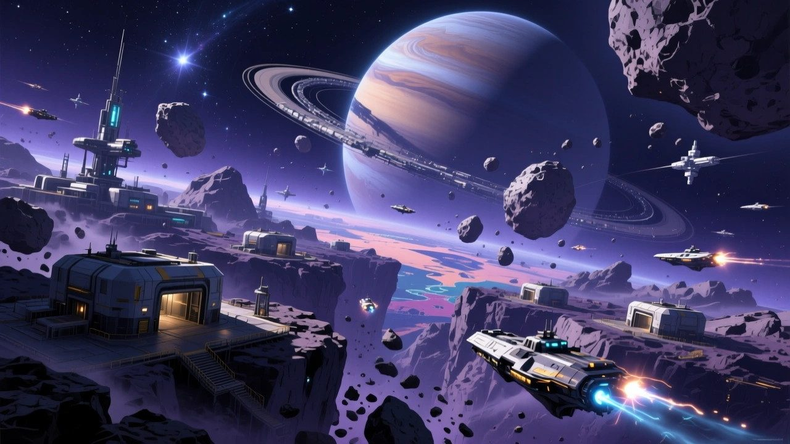
"Sixty star systems, a gas giant, and thousands of clans carving warships out of its moons."
Lore and story
The Helios sector
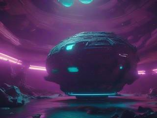
Somewhere in the Milky Way, humans have settled the Helios sector, about sixty star systems. One nation there controls a huge zone of asteroids, planetoids and moons around a gas giant, and it has fallen apart into thousands of clans and gangs.
The clans are what the seven deadly sins look like at scale: greedy, proud, wrathful and lazy, ruled by fear and force, trusting nobody and admiring cruelty. Each one has its own colors and its own grand name, and they all raid their neighbors.
The bunkerships
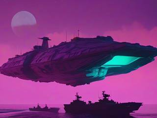
Their warships are carved from hollowed-out moon and asteroid rock and stuffed with a superstructure, engines, reactors, electronics and thrusters. Only exhaust ports, antennas, signal lights and armored turrets poke out of the rock.
No two are alike. The clans never standardized anything, so every ship has its own shape and its own jumble of modules inside. In a slugfest against other big ships a bunkership is formidable. Against something small enough to get close and aim for its weak points, it's in trouble.
The task force
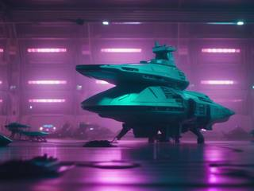
The neighboring nations got tired of the raids. Instead of a costly head-on war of capital ships, they formed an elite task force and built remote-flown drone ships with experimental weapons designed for one job: getting close to a bunkership and breaking it from the inside.
The job right now
You fly those drones. Pick a clan, take its fleet apart one ship at a time, and move on to the next. The war ends only when the whole nation's war fleet is gone, and even then the remnants keep building worse ships out of whatever rock they can find.
Controls and interface
The drone ship is the paddle: a smooth bar with rounded ends, thrusters and an orb generator on its back, sliding along the bottom of the stage. It's played mainly with the mouse, its buttons and the wheel, with a few keys for the extras. The layout below is a suggestion.
Fly
Mouse
Slide the ship left and right
W / S
Widen or narrow the ship
A / D
Hold to soften or harden the hull
Orbs
Left click
Release a new orb, or let a caught one go
Space
Elastic tether: reel every orb back to the ship
Arsenal
Right click
Fire the selected weapon
Wheel
Cycle weapons and consumables
Time
Q / E
Slow down or speed up time
Esc
Pause
A new orb isn't launched, it's released gently above the ship, and you punt it to give it speed. Softening the hull halves an orb's momentum when it bounces off; hardening it doubles it. Balls bounce off the flat top by their own trajectory, but the rounded ends can bend a shot on purpose, if you position the ship for it.
Time runs from 25% to 200% in 25% steps, and below that from 25% down to 5% in finer steps, for lining up the one shot that matters.
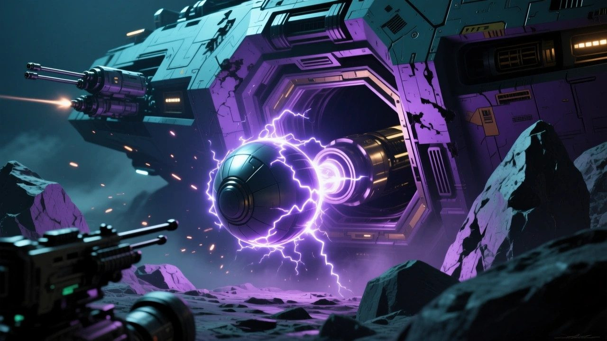
"An orb that gets inside the shell keeps breaking modules without you having to bounce it back."
Game layers
01 · Moment-to-moment
One bunkership
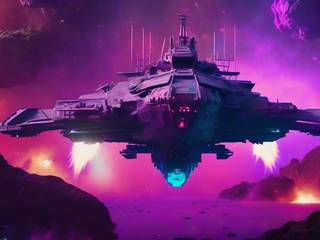
A stage is a single warship hanging above you against a colorful nebula, with at least a fifth of the screen left open at the bottom for you to work in. You chip at its rock shell, look for a port or a crack, and slip an orb inside.
Once an orb is in, the ship's own modules do the work: a fuel tank blows out its neighbors, a capacitor arcs lightning into a random module, and burning debris sprays out of the hull, sometimes at you. Meanwhile the ship's turrets take turns shooting, and supplies tumble out of the wreck. The stage ends when everything that isn't armor is gone.
02 · Low metagame
A clan's fleet
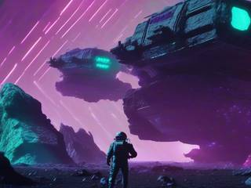
A campaign targets one local clan, with its own name and colors, in the spirit of BattleTech's clans. Its fleet is a run of generated bunkerships to take apart one after another, all painted in that clan's colors.
When the last ship is scrap, the clan is gone from the Helios sector for good, and the campaign is done.
03 · High metagame
The war on the warlord nation
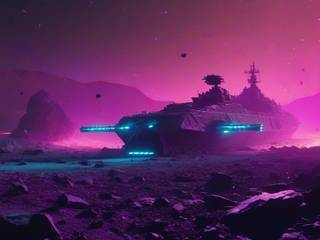
Every clan you break moves the war forward. After each campaign, generated news reports what became of the clan: its leaders falling out in mundane and bizarre ways, the boss pushed out of an airlock by the deputy who now runs what's left, until someone does the same to them.
After about a hundred campaigns the nation is in tatters and the war turns into hunting remnants, each campaign with an extra quirk or twist, and even worse-built ships from even wilder generation. A log of every clan you've wiped out keeps the record. It's the war's history, not a prize.
04 · Practical game flow
One ship or a whole clan
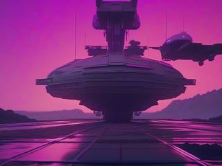
Launch the game, pick up the clan you were working on or choose a new one, and start on the next ship. A ship takes a few minutes, a clan's fleet an evening or two.
Stop after any ship and the campaign waits where you left it. Nothing in the war moves while you're away.
Game modes
There's one mode: the war. It covers every session length on its own, because it's built from pieces you can stop between:
The warEndless: clan after clan, then the remnants, for as long as you like to play.
A clan's fleetOne campaign, a run of generated bunkerships: an evening or two.
A bunkershipOne stage, one ship to gut from the inside: a few minutes.
Features and mechanics
The heart of it
A hard shell, a soft inside
The best moment in any brick breaker is getting the ball above the bricks, into a confined space where it breaks everything around it without you having to bounce it back. Most games treat that as a lucky accident. Here it's the whole point.
Every bunkership has a shell of hardened rock that a normal orb can't break, and a soft inside of machinery that breaks at a touch. Shafts and tunnels run through it, and the shell has gaps: exhaust ports, cracks, missing plates. Find the angle into one and the orb bounces around inside, ripping up modules on its own, while you dodge the turret fire outside.
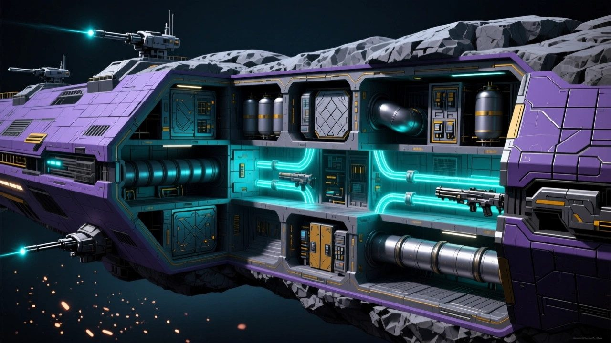
"A normal orb bounces off the rock shell. The machinery inside breaks at a touch."
Never the same ship twice
How a bunkership is built
No ship is handmade. The stage is a grid of square tiles, and a generator builds each warship in a few simple steps:
Hull areasOne to four rectangles, overlapping or not, leaving the bottom fifth open
Rock shellFill with hardened rock, hollow it to a one-tile border
InsidesModules in a pattern or a jumble, sometimes from just two to five types
TurretsFive to fifteen, bolted on with random armor and rarity
Shafts and cracksTunnels carved through, a tenth of the shell knocked out
Paint and skyClan colors, a nebula, and up to two kinds of space weather
Every step is a few lines of rules and a random number, and together they produce an endless supply of ships that each need their own approach: a long thin ship with one port, a lumpy fortress of four blocks with shafts everywhere, a ship whose shell has been shot so full of holes it's barely there.
No lives to lose
Energy orbs and the tether
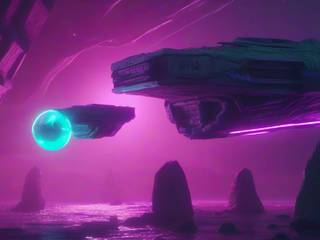
The orbs come from the gravity launcher of Momentum Missile Mayhem 2. Each new orb costs a good chunk of the ship's energy, which refills slowly forever, so you have endless ammunition but a reason to keep the orb you have in play as long as you can.
Losing an orb is fine. It doesn't cost a life and it never ends the game. And because a too-gentle punt can leave an orb crawling across the screen for fourteen seconds, every drone carries an elastic tether as standard: press it and every orb is reeled back to the center of the ship, wherever it is.
The bricks are machinery
Ship modules
Each tile is part of the ship, and what it is decides what it does when it breaks. Any of them can face up, down, left or right, and many come in tougher super and mega versions.
Module
When it's hit
Plain machinery
Breaks in one hit, or several for heavier parts
Armor and rock
Ignores normal orbs; certain powered-up orbs and weapons smash it in one hit. Some plates are armored on one side only
Blast door
Lets an orb pass the first time, then shuts and turns solid
Fuel tank
Explodes, wrecking everything in a circle around it
Ammunition store
Bursts into an even ring of shrapnel
Point-defense charge
Fires a narrow cone of shrapnel the way it faces, or, if it's unstable, any way at all
Capacitor bank
Throws a bolt of lightning at a random module
Rocket rack
Launches an explosive rocket the way it faces; cluster racks scatter bomblets too
Line those up inside a ship and one orb can set off a chain that empties half of it. It also means the wreck fights back: burning debris and stray rockets fly out of the hull, and some of them come your way.
A fair fight
Turrets that take turns
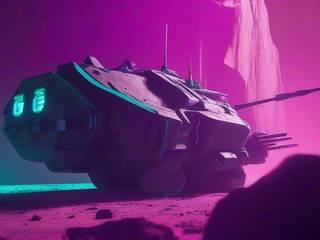
Turrets are bolted onto ordinary modules with armor of their own, from none to heavy. Break the armor and the turret goes, taking the module under it, which then does its own thing: a turret on a fuel tank goes out with a bang.
They work as a network and fire one at a time, with a random pause of one to fifteen seconds before the next, so they're one hazard among several, never a wall of bullets. Every shot is readable: a single blaster aimed at where you just were, spreads of two or three, slow plasma balls, artillery circles you step out of, homing missiles that give up after two seconds, downward laser pulses and beams with a long charge-up, and a sniper whose laser pointer tracks you and locks on a full second before it fires. Zap-drones, borrowed from N++, wander about and can be knocked out with an orb.
Supplies from the wreck
Powerups and weapons
Any module can drop a supply crate when it breaks, at about one chance in twenty. Some change the orbs, some change the ship, and some are weapons with a limited supply of ammunition; picking up more of the same adds time or ammunition on top. Most come in regular, super and mega versions.
Kind
Some of what's in it
Orb upgrades
Faster, heavier, bigger or smaller orbs (stackable), an explosion on every hit, lightning to a random module or arcs to several, a bounce that's random within 170°, and doubling, tripling or multiplying every orb in play
Temporary orbs
A rail orb that drills through up to a hundred tiles, an asteroid orb that splits in three, a spinning disco orb that sprays bolts, an autogun orb, and homing and raptor orbs that hunt for the nearest module
Ship systems
Brief invincibility, a shield that eats hits, a safety net under the ship, glue and magnets that catch orbs, a gravity field that guides falling orbs in, aimable bounces, and better odds of supplies
Weapons
Twin lasers, micro-missiles, a five-way spreader, a beam emitter left hanging in place, striker missiles that hunt turrets, a slow-blooming nuke, an EMP wave that stuns turrets, a point-defense gun and a charged graviton beam that clears a column
The weapons work on the ship from the outside while the orbs work on it from within, and a few of them, like the rail orb or the graviton beam, are how you crack the armor that normal orbs can't touch.
Things that aren't bricks
Portals, launchers and space weather
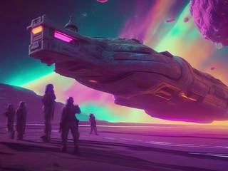
Some fittings sit on the ship's background instead of blocking orbs. Linked tunnels, one-way or two-way, carry an orb from one end to the other with its speed and direction intact, as long as it isn't too big to fit. Launchers catch an orb and fire it off in one of eight directions, and some of them rotate. Explosions can break them like anything else.
Then there's the weather. Anomaly floaters drift in from the edge of the stage, ignore the ship entirely, bounce off the stage edges five to fifteen times and float away. They belong to nobody; some help, some hurt, some just get in the way, and a clever player finds a use for most of them.
The paddle is a ship
Punts, soft hulls and rounded ends
The way orbs come off the paddle comes from Winbrick 2000, with more control on top. An orb released from the ship floats gently until you punt it. Holding the soft hull on contact halves its momentum, for a slow, careful shot into a port; the hard hull doubles it, for an orb that plows deeper into the machinery before it bounces.
The flat top returns an orb by its own angle, so a straight shot stays straight. The rounded ends bend it, and learning to catch an orb on the corner at just the right spot is how you aim it at a shaft half the screen away. A wider ship is safer, a narrower one easier to place exactly, and you can change between them at any moment.
Nothing un-happens
Damage that stays done
The drone ship has a hull that can take several hits, and the ship's shield and barrier pickups can soak more. If it's destroyed anyway, the task force's carrier simply sends the next drone, and the bunkership keeps every hole you've put in it. You pick up where the last drone left off, with fresh energy and no supplies.
The same goes for the war. A clan you've broken stays broken, and every one of them is in the log with its colors, its name and how its leaders ended up.
Trivia
The game's first working title was a frank nod to the trench run in Star Wars, where one small fighter destroys a moon-sized station through a two-meter exhaust port. Other names in the notes: Brickship Breaker, Stoneship Fleet Takedown and Bruteship Ball Buster.
The name shares a word with AAL Bunkerships, but the two are unrelated. That game is set much further in the future, and the clans' crude hollowed-out rocks are, if anything, a primitive ancestor of its mobile fortresses.
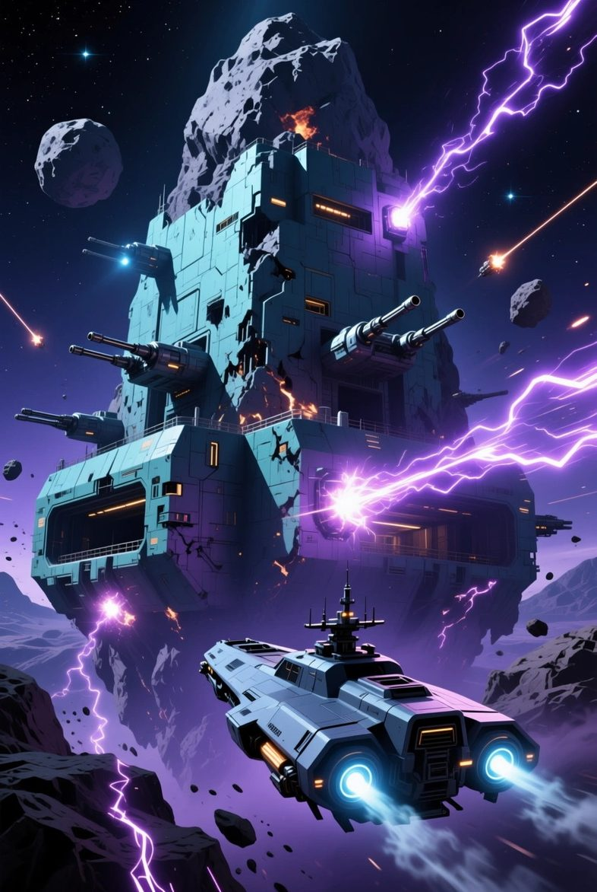
Task force briefing
Bunkership Exhaust Port Breaker: Warship Brick Breaker
Their warships are hollowed-out moons with guns on top. The rock is thick, the turrets never sleep, and nobody wants to fight one head on.
So don't. Fly in low, find the port, punt one orb inside and let their own fuel tanks finish the job. Then do it again, for every clan in the sector.